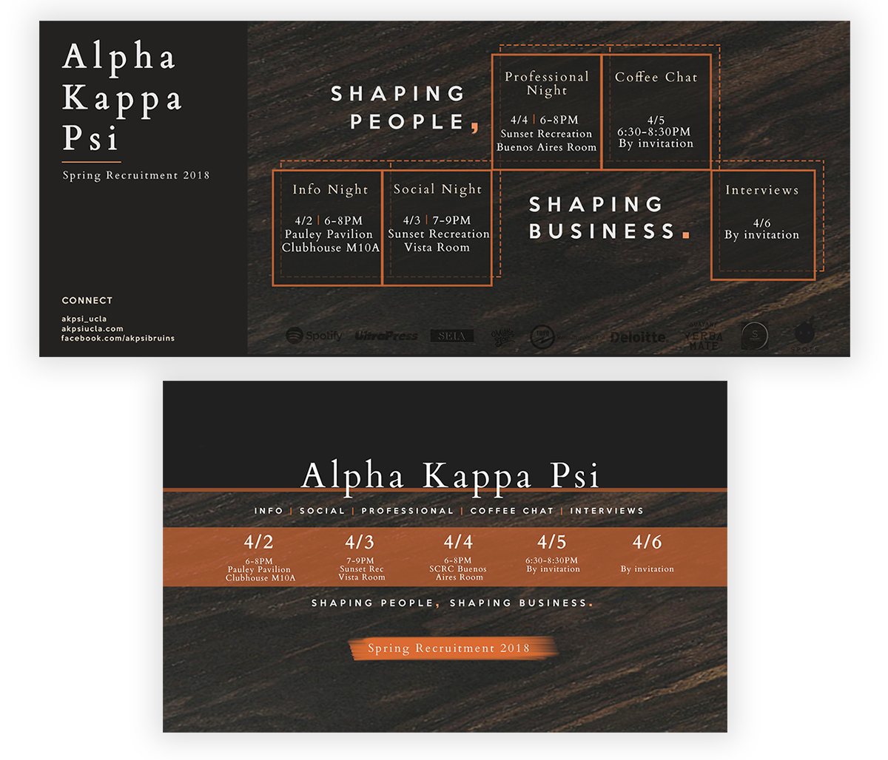

Lead designer
Photoshop, Illustrator
Web, print
June 2017 - Present
I have been part of two design teams for UCLA’s Alpha Kappa Psi, the oldest and one of the most established co-ed professional fraternities in the nation. As one of the lead designers for the Fall 2017 recruitment and design chair for Spring 2018 recruitment, I am tasked with creating promotional material. The goals for the creative process were similar: to create a collection of graphics spanning various mediums, including digital, print, and shirt. However, the challenges and outcomes for each process varied.
Designs for the Fall 2017 can be found here, and the Spring 2018 campaign can be found here.
One of the main challenges we faced was the lack of technical knowledge. Members of the team only had experience with marketing, and mine comprised of Canva and a fine arts background. Moreover, the design needed to center around our new theme -- “It’s Your Story” -- while maintaining the professional branding of Alpha Kappa Psi on campus. The theme this quarter strived to call UCLA students to take hold of their future and shape their own development by joining the fraternity.
First, we experimented with various illustrations to evoke a sense of creation, of a work in progress, and exploration. To do so, we needed to use Photoshop and Illustrator. I learned rapidly, following videos on YouTube and Lynda for technical skills and reading articles on branding and visual design fundamentals on Medium. Here are some iterations in developing primary graphics.
First round of drafts: illustrations.
However, after talking to unaffiliated students, we realized that these initial designs did not represent the professional qualities of the fraternity at all, and those who had never heard of the fraternity were confused about the values of the organization.
As a result, we chose not to move forward with our illustrations, opting instead for readability and connection to the largest audience possible. This influenced our designs to feature images from the workplace and casual day-to-day life, and simple icons to represent the values of the fraternity. We decided to stick with a combination of spacious images and icons to create a warm and inviting tone. In the end, we were confident that our graphics maintained the fraternity’s professional image and could catch the attention of sociable and motivated students.
Rush went successfully, as we received the highest number of applicants ever in chapter history, and inducted an awesome new class. Below are our final designs.
Flyers, front & back
Facebook event banner, profile picture overlay, cover photo
Digital and table display
T-shirt, front & back
Fresh off the previous campaign, I served as design chair for the upcoming Spring recruitment campaign. I gathered input specifically from the newest members to see how the previous marketing had impacted them. The consensus was that the individual graphics were informational, but the collection itself from social media to print lacked a cohesive voice. And similar to the previous quarter, we had to balance branding with the theme we chose for this recruitment: “Shaping People, Shaping Business.”
I established some key guidelines for the new interns of the design committee based off challenges and input from the previous quarter. I wanted to make sure that at each stage of development, we would prioritize our objective and vision, which would help us fairly evaluate and critique possible designs. This helped streamline the creative process and helped everyone stay on the same page. To have unified designs, I believed we needed to have a unified team.
We incorporated images of a watch and coffee cup in order to establish a strong sense of professionalism. To add a sense of dynamism and prevent professionalism from turning staid, we used a diagonal split. We also experimented with various color palettes, ranging from fresh pastels to contrasting tones, as well as textures.
First round of drafts: deciding on the theme.
Ultimately, we chose to use a combination of charcoal and dark wood for a sense of refinement and a more mature tone. These qualities were most clearly in line with our final theme, “Shaping People, Shaping Business.” Unlike the previous quarter, we also focused on marketing to a more specific audience -- students who did not need a warm invitation and were attracted to the professional aspect of Alpha Kappa Psi.
Below are our final designs.
Flyers, front & back
Facebook cover photo, event banner
T-shirt, front & back